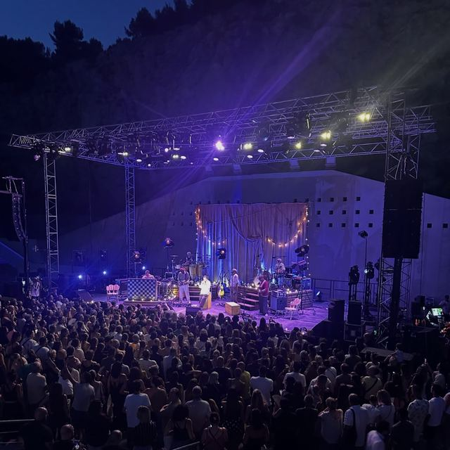
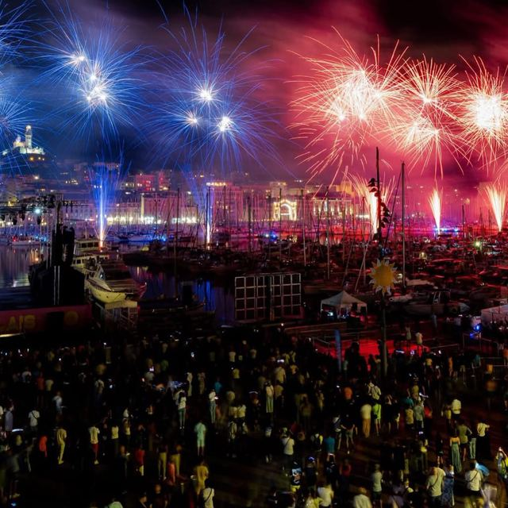
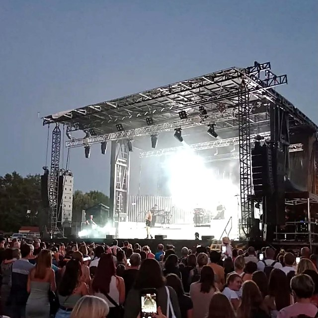
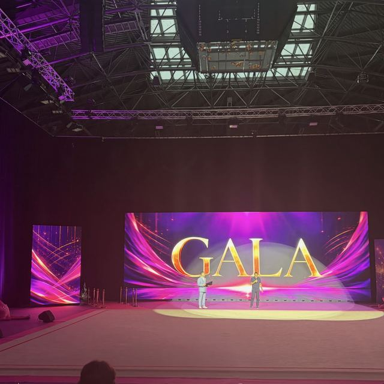
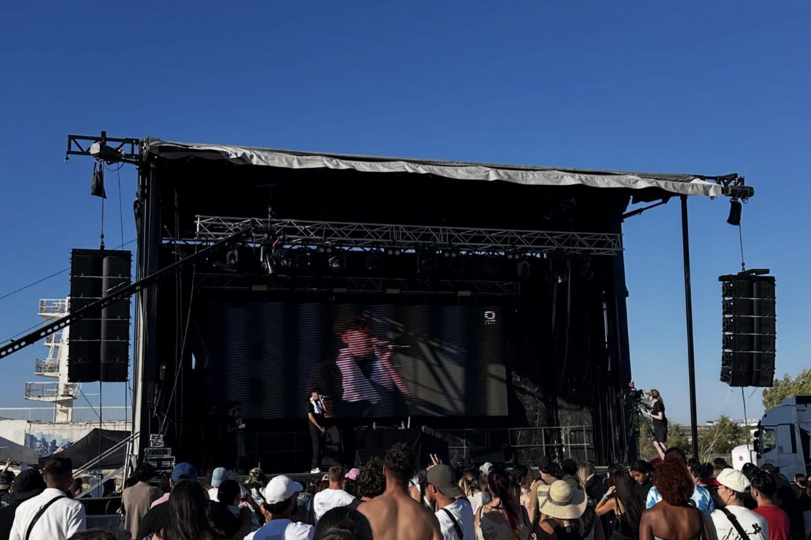
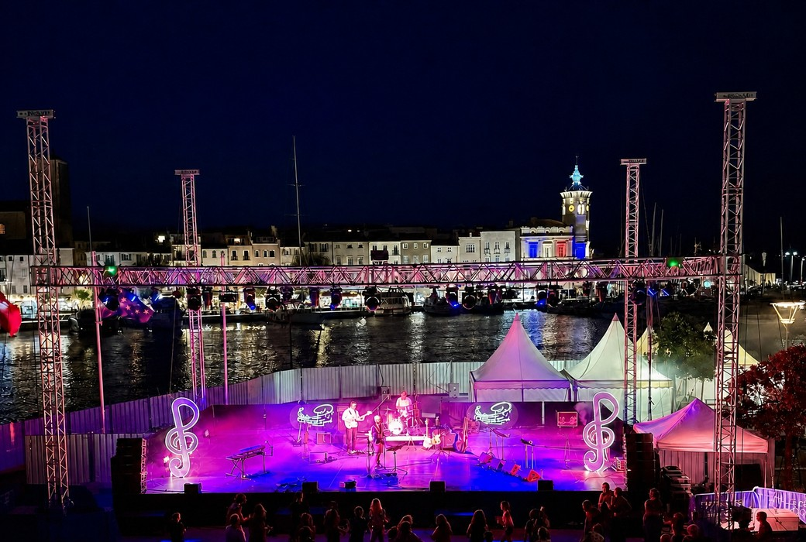
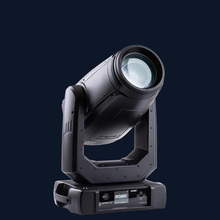
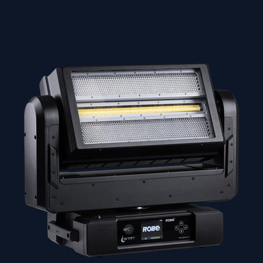

|
MÉDIACOM
SON · LUMIÈRE · VIDÉO · SCÈNE
ÉTÉ 2026
|
 |
 |
 |
 |
|
|
ALLAUCH · MARSEILLE · LA CIOTAT · CANNES
Un été
de tous les records.
| |
Les équipes Médiacom se sont déployées
dans tout le sud de la France, avec une progression
de 46 % du chiffre d’affaires sur juin et juillet.
Retour sur les rendez-vous qui ont fait la saison.
|
|
|
LE FILM DE L’ÉTÉ
Quatre villes,
quatre dispositifs.
|
|
01 / CONCERT · ALLAUCH
Christophe Maé au Théâtre de nature
Deux semi-remorques de matériel pour la Ville d’Allauch : scène de 120 m², grill de 15 × 8 m culminant à 8 m, diffusion L-Acoustics K3 et un important dispositif lumière en projecteurs ROBE et MARTIN.
|
|
|
02 / 13 JUILLET · MARSEILLE
100 000 spectateurs au Vieux-Port
Vieux-Port, abbaye Saint-Victor, Pharo et Canebière sonorisés d’un seul tenant, deux lasers de 35 W sur la Citadelle. Transmission HF, alimentation sur batteries lithium.
|
|
|
03 / MAI–AOÛT · LA CIOTAT
Le Théâtre de la Mer, tout l’été
De début mai à fin août, quatre mois d’exploitation continue sur le même grill scénique. Les temps forts sont à l’affiche, plus bas.
|
|
|
04 / 3–5 JUILLET · CANNES
Little Stars au Palais des Victoires
100 m² d’écran LED plein jour en pitch 2,6 mm, diffusion Kara II, 20 i-ESPRITE et 12 WTF, une trentaine de moteurs pour le pendrillonnage.
|
|
|
|

|
|
MEDIASCÈNE · LA SCÈNE MOBILE
Quand la technique s’efface, l’événement prend toute sa place.
|
|
60–160 m²
SCÈNES MOBILES
|
300 kW
SON DISPONIBLE
|
200 m²
ÉCRANS LED
|
200
ASSERVIS
|
24/7
ASTREINTE
|
|
|
UNE SAISON, QUELQUES TEMPS FORTS
Théâtre de la Mer · La Ciotat

Un plateau en plein air sur le quai François-Mitterrand, exposé au vent et à l’air marin.
Le grill scénique Médiacom y est resté à demeure de début mai à fin août : quatre mois d’exploitation continue, dont voici quelques temps forts.
| 01 |
Fest’In Port
Septième édition, trois soirées à guichets fermés, près de 40 projecteurs Robe et des Starway.
|
| 02 |
Le concert du 14 juillet
Not The Rolling Stones, en sonorisation Kara II et éclairage Robe.
|
| 03 |
Le concours de chant
Les voix de l’été sur le grand plateau du quai, les 22 et 23 août.
|
| 04 |
Les spectacles de danse
« D’eau et de feu », trois créations de la Compagnie Acontretemps.
|
|
|
NOS NOUVEAUTÉS
Le parc lumière s’agrandit.
Deux machines ROBE étanches IP65 rejoignent le parc. Sur une scène en plein air, la météo ne décide plus du déroulé.
|
|

|
ASSERVI LONGUE PORTÉE
ROBE iEsprite IP65
34 000 lumens, 85 000 lux à 5 m, source LED 650 W, zoom de 5,5° à 50°.
VOIR LA FICHE PRODUIT →
|
|
|

|
STROBE · WASH · BLINDER
ROBE WTF! IP65
Trois effets en une seule tête : 72×20 W, 116×10 W, 88×5 W et 16×60 W de LED.
VOIR LA FICHE PRODUIT →
|
|
|
La rentrée se prépare
maintenant.
Indiquez le lieu, la date et la jauge. Notre équipe vérifie la disponibilité du parc et dimensionne votre devis.
Sans engagement · Étude personnalisée · Un seul interlocuteur
|
|
|
|
MÉDIACOM · EURODIREX
Prestataire technique son, lumière, vidéo & scène
25 boulevard de Saint-Marcel, 13011 Marseille · 04 91 35 55 55
Vous recevez cette lettre en tant que client ou partenaire de Médiacom.
Vous pouvez vous désinscrire à tout moment.
|
|